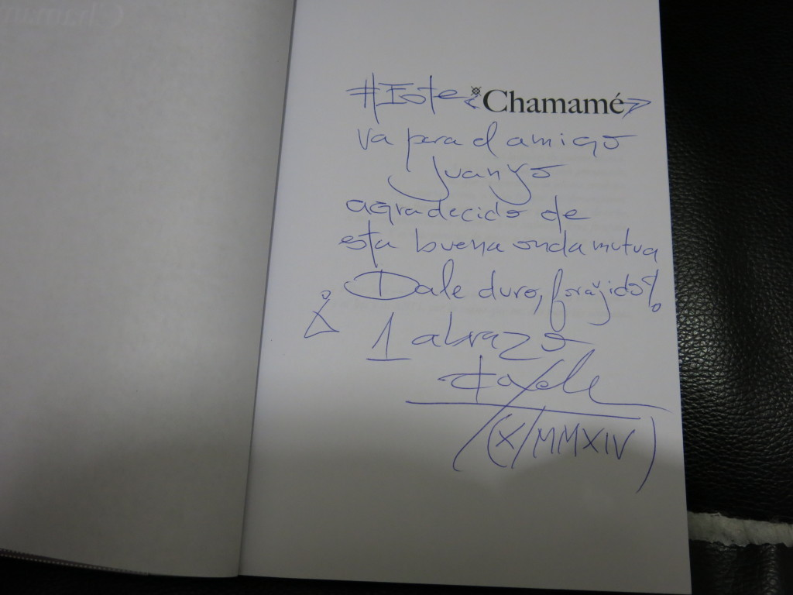

Las últimas cuatro novelas que leí
Las últimas cuatro novelas que leí fueron escritas por personas con las que, de una u otra forma, tengo trato. No me había dado cuenta de eso hasta hoy.
La primera de las cuatro fue Chamamé, de Leonardo Oyola. Pude conocer al autor en persona y que me dedicó la novela mientras la estaba leyendo. El libro es difícil de conseguir en Argentina. Se lo compré a Eterna Cadencia por mail.
{kind=link}

Luego, en la misma ciudad que fue escrita y pocos días después de compartir un SLAM con el autor, devoré La más importante de todas las historias, de Diego Arbit. Se lo compré al autor en mano. La di de alta en Goodreads.
{kind=link}
Apenas terminada la anterior, me metí con Todavía no cumplí cincuenta y ya estoy muerto, de Javier Chiabrando. Policial erótico. El autor nació en mi pueblo, pero nunca lo vi en persona. El título del libro se me había quedado grabado luego de ver una entrevista que le hicieron en canal 7. Compré el libro usado en Internet.
{kind=link}
La última de este periodo de lectura fue El peor amigo del mundo, de Rafael Fernández. Novela de la cual soy un orgulloso mecenas y cuyo crecimiento seguí por Internet. También la di de alta en Goodreads.
{kind=link}
{kind=link}
Cuatro novelas que recomiendo.
Comentarios
Comments powered by Disqus